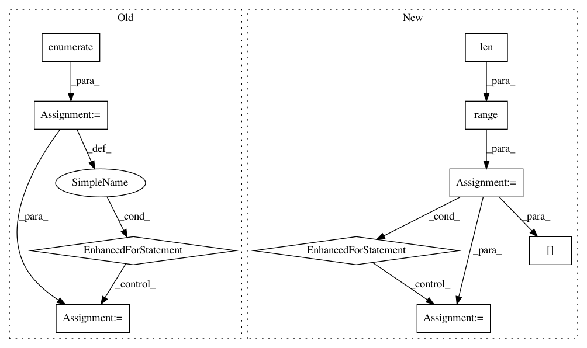

151f9e7d141372ce45fc4367b81385eeccc95093,sequenceLabelling/preprocess.py,,to_vector_simple_with_elmo,#Any#Any#Any#Any#Any#,256
Before Change
// TBD: padding should be left and which vector do we use for padding?
// and what about masking padding later for RNN?
for i, word in enumerate(window):
if lowercase:
word = _lower(word)
if num_norm:
word = _normalize_num(word)
x[i,:] = np.concat(
embeddings.get_word_vector(word).astype("float32"),
x_elmo[i]
)
return x
def to_casing_single(tokens, maxlen=300):
After Change
padding token vector when appropriate
subtokens = []
for i in range(0, len(tokens)):
local_tokens = []
for j in range(0, min(len(tokens[i]), maxlen)):
if lowercase:
local_tokens.append(_lower(tokens[i][j]))
else:
local_tokens.append(tokens[i][j])
subtokens.append(local_tokens)
return embeddings.get_sentence_vector_with_ELMo(subtokens)
def to_casing_single(tokens, maxlen=300):
In pattern: SUPERPATTERN
Frequency: 4
Non-data size: 10
Instances
Project Name: kermitt2/delft
Commit Name: 151f9e7d141372ce45fc4367b81385eeccc95093
Time: 2018-06-20
Author: patrice.lopez@science-miner.com
File Name: sequenceLabelling/preprocess.py
Class Name:
Method Name: to_vector_simple_with_elmo
Project Name: openai/baselines
Commit Name: 9b68103b737ac46bc201dfb3121cfa5df2127e53
Time: 2019-05-08
Author: peterzhokhoff@gmail.com
File Name: baselines/common/vec_env/vec_monitor.py
Class Name: VecMonitor
Method Name: step_wait
Project Name: fizyr/keras-retinanet
Commit Name: a0d99cbb44b1eaa909c34c88833d501a83322767
Time: 2018-11-02
Author: h.gaiser@fizyr.com
File Name: keras_retinanet/preprocessing/generator.py
Class Name: Generator
Method Name: preprocess_group
Project Name: tensorflow/magenta
Commit Name: 03357441d76e4296e323f25974d2d45cd9fbba2f
Time: 2016-11-08
Author: curtis@thefjord.org
File Name: magenta/models/polyphonic_rnn/polyphonic_rnn_lib.py
Class Name: TFRecordDurationAndPitchIterator
Method Name: __next__